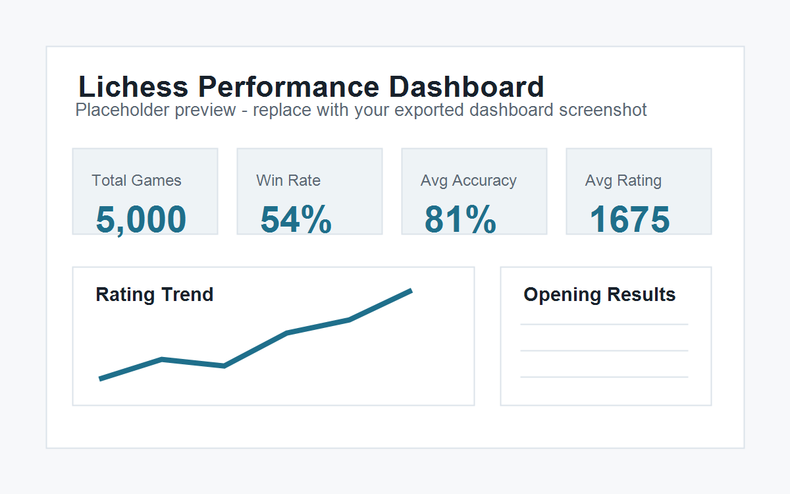

Project Overview

This dashboard converts raw Lichess game data into an interactive Power BI report designed for performance analysis. The report gives a clear view of rating trends, win/loss patterns, opening performance, monthly activity, and accuracy metrics.
Analytical Problem
Raw game histories are difficult to analyze directly. Individual games contain useful details, but trends only become visible after the data is extracted, cleaned, grouped, and modeled. This dashboard turns thousands of individual games into summary metrics and drillable views.
Data Pipeline
Lichess API → Python extraction and parsing → structured dataset → Power BI model → DAX measures → interactive dashboard.
Dashboard Features
- KPI cards for total games, win rate, average accuracy, and average user rating
- Rating trend over time
- Monthly game volume
- Win/loss/draw breakdown
- Win rate by opening
- Opening variation matrix with games, wins, losses, and win rate
- Power BI report embed placeholder for interactive viewing
Technical Challenges
- Extracting usable fields from raw Lichess game data
- Normalizing game results into win/loss/draw categories
- Grouping opening names and variations consistently
- Building DAX measures for win rate and summary KPIs
- Designing a dashboard that supports quick performance analysis rather than just displaying charts
Reporting Value
The finished report provides a reusable performance review tool. Instead of reviewing individual games manually, the dashboard summarizes long-term trends and highlights which openings, time periods, and result categories deserve closer review.
Power BI Dashboard Embed
Use the embedded report below once the public Power BI URL is available.